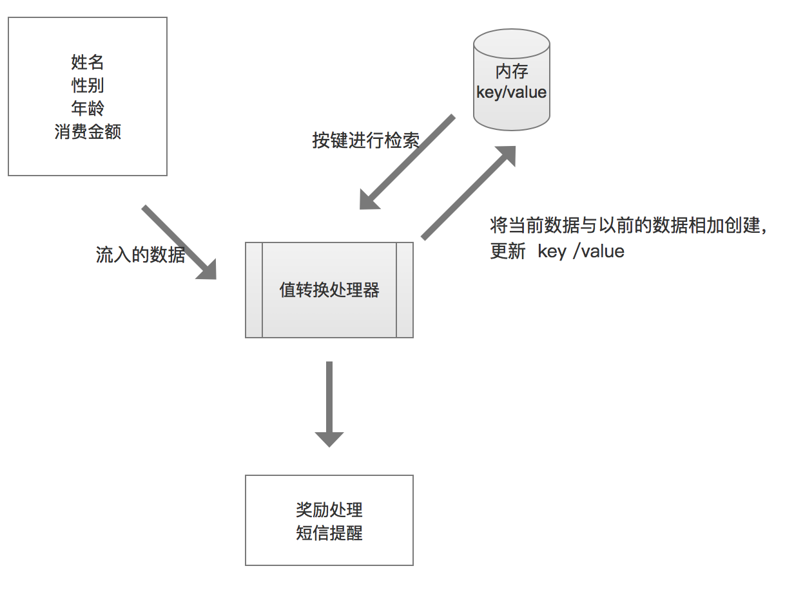

流和状态
有时候一个单独的事件并不能提供足够的信息来作决定, 比如需要对一个值进行累加， 这个时候就需要增加一些上下文， 产生静态资源的映像.
在流数据处理并不总是需要状态， 在某些情况下， 离散事件或记录可能已独自携带了足够有价值的信息。但通常情况下， 流入的数据需要从某类存储的数据来加以丰富.
将流状态操作应用到kafka stream
场景： 将客户消费进行累加。
stream数据:
{
"name": "wang",
"sex": "male",
"age": 11,
"money": 999
}
Serde
通过json来做序列化和反序列化
自定义数据类型：
case class Purchase(
name: String,
sex: String,
age: Int,
money: Int
)
定义json数据类型
object Json {
type ParseException = JsonParseException
type UnrecognizedPropertyException = UPE
private val mapper = new ObjectMapper()
mapper.registerModule(DefaultScalaModule)
mapper.setSerializationInclusion(JsonInclude.Include.NON_NULL)
private def typeReference[T: Manifest] = new TypeReference[T] {
override def getType = typeFromManifest(manifest[T])
}
private def typeFromManifest(m: Manifest[_]): Type = {
if (m.typeArguments.isEmpty) {
m.runtimeClass
}
else {
new ParameterizedType {
def getRawType = m.runtimeClass
def getActualTypeArguments = m.typeArguments.map(typeFromManifest).toArray
def getOwnerType = null
}
}
}
object ByteArray {
def encode(value: Any): Array[Byte] = mapper.writeValueAsBytes(value)
def decode[T: Manifest](value: Array[Byte]): T =
mapper.readValue(value, typeReference[T])
}
}
序列化和反序列化
class JSONSerializer[T] extends Serializer[T] {
override def configure(configs: util.Map[String, _], isKey: Boolean): Unit = ()
override def serialize(topic: String, data: T): Array[Byte] =
Json.ByteArray.encode(data)
override def close(): Unit = ()
}
/**
* JSON deserializer for JSON serde
*
* @tparam T
*/
class JSONDeserializer[T >: Null <: Any : Manifest] extends Deserializer[T] {
override def configure(configs: util.Map[String, _], isKey: Boolean): Unit = ()
override def close(): Unit = ()
override def deserialize(topic: String, data: Array[Byte]): T = {
if (data == null) {
return null
} else {
Json.ByteArray.decode[T](data)
}
}
}
JSONSerde
class JSONSerde[T >: Null <: Any : Manifest] extends Serde[T] {
override def deserializer(): Deserializer[T] = new JSONDeserializer[T]
override def configure(configs: util.Map[String, _], isKey: Boolean): Unit = ()
override def close(): Unit = ()
override def serializer(): Serializer[T] = new JSONSerializer[T]
}
官方推荐的序列化用的是avro， 有兴趣的话可以参考这篇文章
开发过程中调试
可通过Kstraem.print打印信息, 比如下面将原始流打印：
object Main extends App {
import Serdes._
val props: Properties = {
val p = new Properties()
p.put(StreamsConfig.APPLICATION_ID_CONFIG, "purchase")
p.put(StreamsConfig.BOOTSTRAP_SERVERS_CONFIG, "xxxxx:9092")
p
}
val builder: StreamsBuilder = new StreamsBuilder
implicit val purchaseSuede = new JSONSerde[Purchase]
val pstream = builder.stream[String, Purchase]("xxxx")
pstream.print(Printed.toSysOut[String, Purchase])
val streams: KafkaStreams = new KafkaStreams(builder.build(), props)
streams.start()
sys.ShutdownHookThread {
streams.close(10, TimeUnit.SECONDS)
}
}
处理步骤
使用值转换器(transformValues)处理器将无状态的奖励处理器转换为有状态的处理器.

transformValues 接受一个ValueTransformerSupplier[V, R]对象的参数。
以下为实现的几个类
V => Purchase
R => RewardAccumulator
PurchaseRewardTransformer => 实现ValueTransformer
class PurchaseRewardTransformer(val storeName: String)
extends ValueTransformer[Purchase, RewardAccumulator]
{
private var stateStore: KeyValueStore[String, Int] = _
private var context: ProcessorContext = _
override def init(context: ProcessorContext): Unit = {
this.context = context
stateStore = this.context.getStateStore(storeName).asInstanceOf[KeyValueStore[String, Int]]
}
override def transform(p: Purchase): RewardAccumulator = {
var r = RewardAccumulator.build(p)
val value = stateStore.get(r.name)
if (value != null) {
r.purchaseTotal += value
}
stateStore.put(r.name, r.purchaseTotal)
r
}
override def close(): Unit = {}
}
新建一个store
- 用高阶api
(Materialized.as("counts-store"))
- 用低阶api, 使用Store类几个静态工厂方法来创建存储供应者
- Stores.inMemoryKeyValueStore
- Stores.persistentKeyValueStore;
- Stores.lruMap
- Stores.persistentWindowStore
- Stores.persistentSessionStore
-
新建stateStore实例
var storeSupplier = Stores.inMemoryKeyValueStore("store1") -
创建StoreBuilder并指定键和值的类型
var storeBuilder = Stores.keyValueStoreBuilder(storeSupplier, Serdes.String, Serdes.Integer) -
将状态存储添加到拓扑
builder.addStateStore(storeBuilder)
完整代码
从topic为data1读取， 存储状态到store1， 输出到data2 topic
object Main extends App {
import Serdes._
val props: Properties = {
val p = new Properties()
p.put(StreamsConfig.APPLICATION_ID_CONFIG, "purchase")
p.put(StreamsConfig.BOOTSTRAP_SERVERS_CONFIG, "xxxxx:9092")
p
}
val builder: StreamsBuilder = new StreamsBuilder
implicit val purchaseSuede = new JSONSerde[Purchase]
implicit val rewardAccumulatorSuede = new JSONSerde[RewardAccumulator]
val pstream = builder.stream[String, Purchase]("data1")
var storeSupplier = Stores.inMemoryKeyValueStore("store1")
var storeBuilder = Stores.keyValueStoreBuilder(storeSupplier, Serdes.String, Serdes.Integer)
builder.addStateStore(storeBuilder)
val accuStream = pstream.transformValues(() => new PurchaseRewardTransformer("store1"), "store1")
.asInstanceOf[KStream[String, RewardAccumulator]]
.to("data2")
val streams: KafkaStreams = new KafkaStreams(builder.build(), props)
streams.start()
sys.ShutdownHookThread {
streams.close(10, TimeUnit.SECONDS)
}
}
容错
所有的StateStoreSupplier类型默认都启用了日志(新建了一个topic)， 比如上面会创建一个topic[purchase-store1-changelog], 一旦运行kafka stream应用程序的机器宕机了， 重新启动即可， 这台机器的状态存储会恢复到它们原来的内容
可以通过设置 retention.ms 和 retention.bytes进行设置日志保留时间